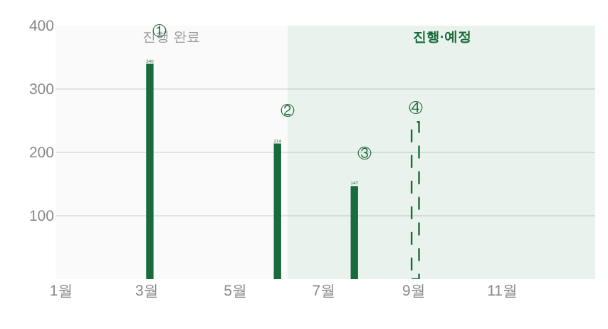
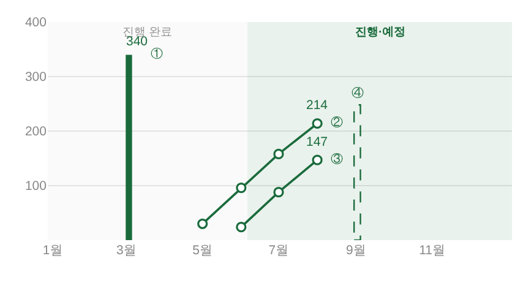
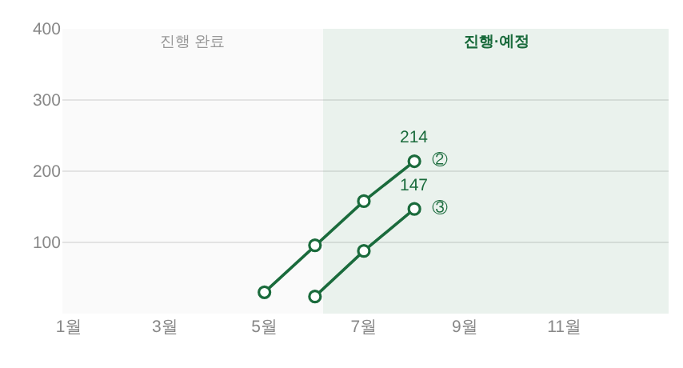

지시(운영자 260805) 「예술 교육을 이 선과 같이 표현해줘. 지금 말고(이미 종료되었으니까) 종료 안된거는(판매중일경우는, 공연과 같이) …
사실상 예술교육은 공연하고 같이 표현해줘. 동시에 팔릴경우는 누적그래프로 할거임」 ·
대상 = _bizDrawSalesBars(dom='edu') · 원천 = _bizEduDailyIdx(운영_일일입력) ·
화면 = 결정적 목데이터(tools/scratch/shot_edu_sales.mjs) ?qa=admin 1920×1080 · 실API·실데이터·PII 미접촉.
교육 반쪽은 프로그램마다 막대 하나였다. 끝난 교육에는 맞는 표기(최종 수강생 = 그 한 값)지만, 아직 파는 중인 교육에는 ① 얼마나 차오르고 있는지가 안 보이고 ② 둘이 동시에 팔리면 두 막대가 서로 다른 달에 서 있어 비교가 안 된다.
| 상태 | 전 | 후 |
|---|---|---|
| 종료 | 실막대(최종값) | 실막대 — 그대로(운영자 「지금 말고 … 이미 종료되었으니까」) |
| 판매중 | 실막대 하나 — 시작 달에 최종값만 | 누계 꺾은선 · 꼭자락에 현재 누계 |
| 동시 판매 | 막대 2개가 다른 달에 — 비교 불가 | 같은 축 위 두 선 — 같은 달 자리에서 높이로 바로 비교된다 |
| 예정·값 없음 | 파선 게이지 | 파선 게이지 — 그대로 |
구 코드 주석은 「동시에 팔리는 교육이 생기면 이 누계 꺾은선을 같이 쓰는 게 운영자 방향이나, 지금은 일일 입력이 예술교육을 제외해 월별 원천이 없다」였다.
실제로 _dailyMasters의 프로그램 폴백이 콘텐츠구분==='예술교육'을 통째로 걷어내, 마스터 미등록 교육은 앱 어느 입구로도 일일 실적을 넣을 수 없었다.
(마스터에 등록된 교육은 위쪽 마스터 경로가 이미 담당 카테고리 필터로 통과시키고 있었다 = 두 입구가 어긋나 있었다.)
_dailyAllowedCats)는 그대로라, 예술교육 담당자·최고관리자에게만 목록에 뜬다._bizEduDailyIdx(year) — 공연이 쓰는 그 시트 그대로(운영_일일입력 · 합계좌석 = 그 날짜까지의 누계)를 달 단위로 접는다.
규칙 3가지(그 달 최댓값 · 누계는 안 줄어든다 · 선택 연도만)는 전시 반쪽 _bizDrawExhibMonthly 정본 계승 — 새 집계 규칙 0.목데이터 = ① 종료 교육 1건(운영대장 발권유료 340) · ②③ 판매중 2건(6~8월 동시 판매) · ④ 예정 1건(원천 없음). 그리는 문법은 전시 반쪽 정본 그대로 — 진행중 = 빈 동그라미, 값 라벨은 꼭자락 하나뿐(월별 수치는 툴팁만), 면 없음(아래 §6).


「전체 ↔ 판매중」 토글을 켠 화면 — 끝난 ①이 빠지고 두 누계선만 남는다(공연·전시와 같은 축).

판매 축이 교육까지 싣게 되자, _bizCompRender의 「판매중 ∪ 조인」이 그 교육을 공연 목록에도 얹었다.
교육의 정본 자리는 이 면 하단 예술교육 반쪽이다 — 한 사업은 한 자리에서만 센다.
| 3면 좌 열 KPI(목데이터) | 전 | 후 | 차이 |
|---|---|---|---|
| 사업 수 | 20건 | 18건 | 교육 2건이 공연 목록에 섞여 있었다 |
| 누적 매출 | 508만 | — | 508만 = 그 교육 두 건의 금액 전부 |
| 누적 판매 고객 | 24,140명 | 23,779명 | −361 = 214 + 147(교육 수강생) |
_bizEduNameSet()(프로그램 시트 t'a'). 판매 축(공연마스터·운영_일일입력)엔 콘텐츠 구분 열이 없어, 구분을 아는 유일한 소스가 프로그램 시트다.Plotly는 막대 밖 글자를 막대 폭에 맞춰 줄여 그린다. 교육 게이지는 굵기 ≈5px라 지정 10.5px가 실제로는 5~6px로 찍혔다
(위 「전」 그림의 작은 숫자들). 선 꼭자락 라벨은 주석이라 10.5px 그대로여서 한 카드 안에서 크기가 갈렸다 →
교육 반쪽만 막대 값 라벨도 주석으로 뽑아 한 벌로 맞췄다. 자리·겹침 판정은 기존 labs 규칙 그대로(같은 규칙 두 벌 금지) · 공연 차트는 막대가 굵어 종전 그대로(회귀 0).
작업 중 다른 세션이 main에 올린 판정: 전시 누계선의 「고유색 50% 면」은
같은 바닥(0)에서 겹쳐 그린 것이라 누적도 직각도 아니다(운영자) → 철거. 같은 판정이 교육에도 그대로 걸리므로
이 작업의 누계선도 면 없이 낸다(처음 시안에는 있었고, 머지에서 뺐다). 되살릴 땐 전시와 같은 조건 —
시작일순 스택 + 직각(hv 스텝)으로만.
initApp 중단)도 양쪽이 각자 잡았다 →
main의 _ctDefs()(hoist 보장)를 채택하고 이 세션의 「값을 부팅 줄 위로 이동」판은 철회했다.
같은 사고를 두 벌로 막지 않는다.lines 2 · fills 0 · points 7(②4점 + ③3점) · 값 라벨 214 / 147 / 340 · 색인 ①②③④ 전건.shot_exmonthly: 902 / 3,827 / 3,080 / 252 · 점 채움 규칙 동일) · pageerror 0.npm run check ✓ — check_design raw hex index 1578/1578 무변 · :root 2/0 · 새 토큰·새 색 0 · check_refs ✓ · _YR 정합 ✓.npm run smoke:layout ✓ 1920×1080 · ✓ 1440×900 · npm run smoke ✓.